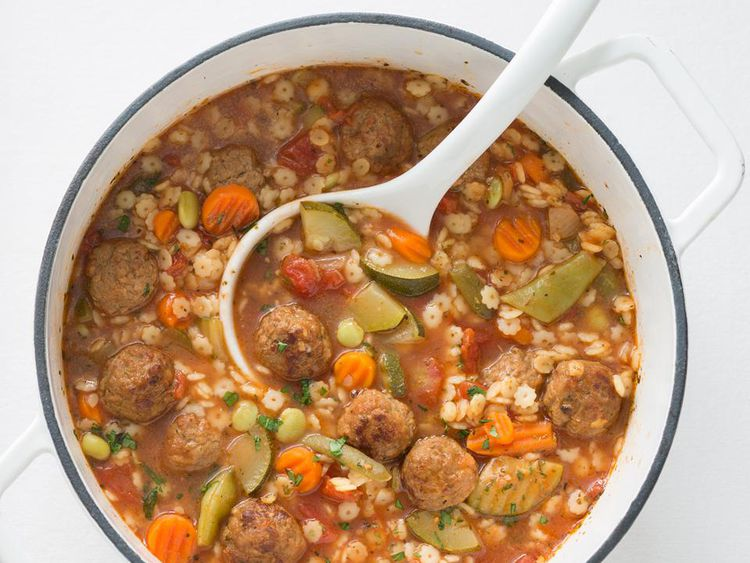

Hearty Italian Meatball Soup

Description
This Italian meatball soup is a very hearty, flavorful soup. Use whatever small-shaped pasta you like.
Ingredients
- 3 cups water
- 2 (14 ounce) cans diced tomatoes with onion and garlic, undrained
- 2 (14 ounce) cans beef broth
- 1 teaspoon Italian seasoning
- 1 (16 ounce) package frozen cooked Italian-style meatballs
- 2 cups frozen Italian-blend vegetables
- 1 cup small star-shaped dried pasta
- ¼ cup grated Parmesan cheese
Steps
- Stir water, tomatoes, beef broth, and Italian seasoning together in a large pot; bring to a boil.
- Add meatballs, Italian-blend vegetables, and pasta to the pot; bring to a boil, reduce heat to medium-low, and cook until meatballs are heated through and the pasta is tender, about 10 minutes.
- Ladle soup into bowls and garnish with Parmesan cheese.